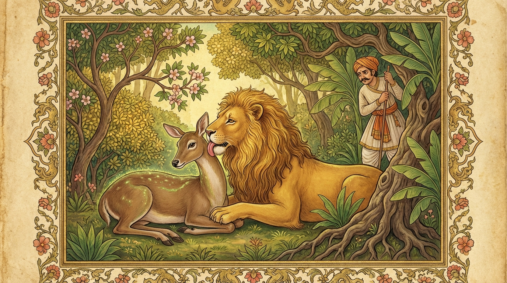

3. විස්සාසභොජන ජාතකය (93)
“න විස්සසෙ අවිස්සත්ථෙ” (විශ්වාස නොවූවහු කෙරෙහි විශ්වාස නොකරන්නේය) යන මේ ගාථා පාඨය මුල් කොට ගෙන ශාස්තෲන්
වහන්සේ ජේතවනාරාමයෙහි වැඩ වාසය කරන සමයෙහි ‘විශ්වාස භෝජනයක්’ (විශ්වාසය මත අනුභව කිරීමක්) අරබයා මෙම දේශනාව වදාළ
සේක.
එකල බොහෝ භික්ෂූන් වහන්සේලා;
- මව විසින් දෙන ලද,
- පියා විසින් දෙන ලද,
- සහෝදරයා විසින් දෙන ලද,
- සහෝදරිය විසින් දෙන ලද,
- කුඩා මව (පුංචි අම්මා) විසින් දෙන ලද,
- කුඩා පියා (බාප්පා) විසින් දෙන ලද,
- මාමා විසින් දෙන ලද,
- නැන්දා විසින් දෙන ලද,
ආදී වශයෙන් වූ සිව්පසය, “අපගේ ගිහි කාලයේදීත් පැවිදි කාලයේදීත් මොවුහු අපට දීමට සුදුසු ය” යනුවෙන් සිතා, ඤාතීන්
කෙරෙහි විශ්වාසය තබා ප්රත්යවේක්ෂා නොකොට (නුවණින් නොවිමසා) පරිභෝග කළහ. ශාස්තෲන් වහන්සේ එම කරුණ දැන,
“භික්ෂූන්ට මා විසින් ධර්ම දේශනාවක් කිරීම වටී” යැයි සිතා භික්ෂූන් රැස් කරවා මෙසේ වදාළ සේක.
“මහණෙනි,
භික්ෂුව විසින් ඤාතීන් විසින් හෝ වේවා, ඤාතීන් නොවන අය විසින් හෝ වේවා දෙන ලද සිව්පසය ප්රත්යවේක්ෂා කොටම
(නුවණින් විමසා බලාම) පරිභෝග කළ යුතුය. මන්ද යත්, ප්රත්යවේක්ෂා නොකොට පරිභෝග කරමින් සිට කලුරිය කරන භික්ෂුව
යක්ෂ, ප්රේත ආත්මභාවයන්ගෙන් නොමිදෙයි. ප්රත්යවේක්ෂා නොකළ පරිභෝගය වනාහී විෂ අනුභව කිරීමක් හා සමානය. විෂ
වනාහී විශ්වාසවන්තයෙකු විසින් දුන්න ද, අවිශ්වාසවන්තයෙකු විසින් දුන්න ද මරණයට පත් කරවයි. පෙරත් විශ්වාසය නිසා
දෙන ලද විෂ අනුභව කොට සත්ත්වයෝ ජීවිතක්ෂයට පත් වූහ.”
මෙසේ වදාරා බුදුරදුන් අතීත කතාව ගෙනහැර දැක්වූ සේක.
අතීතයේ බරණැස් නුවර බ්රහ්මදත්ත රජු රාජ්ය කරන සමයෙහි බෝධිසත්වයෝ මහා ධනවත් සිටුවරයෙක්ව උපන්හ. ඔහුගේ එක්
ගොපල්ලෙක් කෙතෙහි ගොයම් පවතින කාලයේ දී (ගවයන්ට කෙතට යාමට ඉඩ ඇති බැවින්) ගවයන් රැගෙන වනයට පිවිස, එහි ගව ගාලක්
තනාගෙන ගවයන් රකිමින් වාසය කරයි. හෙතෙම සිටුතුමාට ද කලින් කලට පස්ගෝ රස ගෙන එයි.
ඉක්බිති ඔහුගේ ගව ගාලට
නුදුරින් එක් සිංහයෙක් වාසය කිරීමට පටන් ගත්තේය. සිංහයා කෙරෙහි ඇති බිය නිසා දෙනුන් මලානික වූ අතර කිරි ද මඳ
විය. එක් දිනක් ගිතෙල් රැගෙන ආ ගොපල්ලාගෙන් සිටුතුමා, “යහළු ගොපල්ල, ගිතෙල් මඳ වීමට හේතුව කුමක් දැ?” යි විමසීය.
ඔහු එම කාරණය පැවසීය.
“යහළුව, ඒ සිංහයාගේ කිසියම් තැනක ඇල්මක් තිබේ දැ?” යි සිටුවරයා ඇසීය.
“එසේය
ස්වාමීනි, එක් මුව දෙනක් සමඟ ඔහුගේ සංසර්ගයක් (ඇසුරක්) ඇතැ” යි හෙතෙම පැවසීය.
“එසේ නම් ඇය අල්ලා ගැනීමට හැකි
දැ?” යි ඇසූ විට, “හැකිය ස්වාමීනි” යැයි ගොපල්ලා පිළිතුරු දුන්නේය.
“එසේ නම් ඇය අල්ලාගෙන, ඇගේ නළලේ පටන් මුළු
සිරුරේ ලොම්වල නැවත නැවතත් විෂ ගල්වා, වියළවා, දින දෙක තුනක් ඉක්මවා ඒ මුව දෙන මුදා හරිනු. එවිට සිංහයා ඇය
කෙරෙහි ඇති ස්නේහයෙන් ඇගේ සිරුර ලෙවකා ජීවිතක්ෂයට පත් වනු ඇත. ඉන්පසු;
- සිංහයාගේ සම ද,
- නිය ද,
- දළ ද,
- වසාව (තෙල්) ද,
- මස් ද,
රැගෙන එන්න” යැයි හලාහල විෂ දී ඔහු පිටත් කර හැරියේය.
ඒ ගොපල්ලා දැලක් දමා උපායෙන් ඒ මුව දෙන අල්ලාගෙන සිටුතුමා කී පරිදිම කළේය. සිංහයා ඇය දුටු වහාම බලවත් ස්නේහයෙන්
ඇගේ සිරුර ලෙවකා ජීවිතක්ෂයට පත් විය. ගොපල්ලා ද සිංහ සම් ආදිය රැගෙන බෝධිසත්වයන් වෙත ගියේය.
බෝධිසත්වයෝ එම
කරුණ දැන, “අන් අය කෙරෙහි (කෙලෙස්) ස්නේහය නොකළ යුතුය. මෙසේ මහා බලසම්පන්න මෘගරාජ සිංහයා පවා, ක්ලේශ වසයෙන් ඇති
වූ සංසර්ගය නිසා මුව දෙනගේ සිරුර ලෙවකමින් විෂ පරිභෝග කොට ජීවිතක්ෂයට පත් විය” යැයි පවසා, එහි පැමිණි පිරිසට
ධර්මය දේශනා කරමින් මෙම ගාථාව වදාළහ.

“අවිශ්වාස වූවහු කෙරෙහි විශ්වාසය නොකළ යුතුය. (පෙර අවිශ්වාසව සිට) විශ්වාස වූවහු කෙරෙහි ද විශ්වාසය නොකළ යුතුය. මන්ද යත් විශ්වාසය නිසා බිය (අනතුර) පැමිණේ. ඒ, මුව දෙන කෙරෙහි විශ්වාසය තැබූ සිංහයාට බිය පැමිණියාක් මෙනි.”
එහි සංක්ෂිප්ත අර්ථය මෙයයි:
යමෙක් පෙර තමා කෙරෙහි බිය සහිතව අවිශ්වාසීව සිටියේ ද, ඒ ‘අවිස්සත්ථෙ’ හෙවත්
අවිශ්වාසවන්තයා කෙරෙහි විශ්වාස නොකළ යුතුය. යමෙක් පෙර සිටම බිය රහිතව තමා කෙරෙහි විශ්වාසවන්තව සිටියේ ද, ඒ
‘විස්සත්ථෙපි න විස්සසෙ’ හෙවත් විශ්වාසවන්තයා කෙරෙහි ද විශ්වාස නොකළ යුතුය; හුදෙක් විශ්වාසයම නොකළ
යුතුය.
ඒ මන්ද යත්? ‘විස්සාසා භයමන්වෙති’ - මිතුරා කෙරෙහි හෝ වේවා, සතුරා කෙරෙහි හෝ වේවා යම්
විශ්වාසයක් කෙරේ ද, ඒ හේතුවෙන් බියම හටගනී.
ඒ කෙසේ ද යත්? ‘සීහංව මිගමාතුකා’ - මිත්ර සන්ථවය වශයෙන්
විශ්වාසය තැබූ මුව දෙන නිසා සිංහයා කරා බිය පැමිණියාක් මෙනි. නොඑසේ නම් විශ්වාසය වශයෙන් සිංහයා මුව දෙන පසුපස
ගොස් විනාශයට පත් වූවාක් මෙනි.
මෙසේ බෝධිසත්වයෝ රැස්ව සිටි පිරිසට ධර්මය දේශනා කොට, දානාදී පුණ්යකර්ම සිදු කර, කම් වූ පරිදි මිය ගියහ.
ශාස්තෲන් වහන්සේ මේ ධර්ම දේශනාව ගෙනහැර දක්වා, “එකල මහා සිටුවරයා වූයේ මා ම යැ” යි වදාරා ජාතකය නිම කළ සේක.
තුන්වන විස්සාසභොජන ජාතක වර්ණනාවයි.